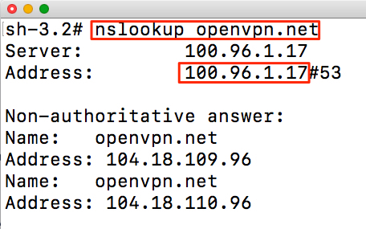

User Guide - Securing DNS
Overview
This guide provides information on how CloudConnexa secures DNS queries to guard against DNS-based attacks and exploits.
Background
Domain Name Servers (DNS) are used to look up the IP address that is needed to communicate with a computing entity, such as a web server, that is addressed by a name. For example, www.example.com
Security was not baked into the DNS mechanisms when it came in widespread use and a variety of DNS exploits exist. For example, DNS Hijacking.
DNS Hijacking
DNS hijacking, DNS poisoning, or DNS redirection is the practice of subverting the resolution of Domain Name System (DNS) queries. This can be achieved by malware that overrides a computer’s TCP/IP configuration to point at a rogue DNS server under the control of an attacker, or through modifying the behaviour of a trusted DNS server so that it does not comply with internet standards.
These modifications may be made for malicious purposes such as phishing, for self-serving purposes by Internet service providers (ISPs), by the Great Firewall of China and public/router-based online DNS server providers to direct Users’ web traffic to the ISP’s own web servers where advertisements can be served, statistics collected, or other purposes of the ISP; and by DNS service providers to block access to selected domains as a form of censorship.
CloudConnexa secures DNS queries
The figure below illustrates how a compromised or rogue Wi-Fi hotspot can carry out a pharming or phishing attack because the Devices connected to the Wi-Fi hotspot are configured to use the rogue DNS server when they connect to the Wi-Fi Network.
The figure below illustrates how the rogue DNS server is bypassed and the DNS queries are encrypted and protected when using CloudConnexa. The Wi-Fi hotspot and local ISP cannot even eavesdrop or capture the names that are being resolved, which they would do if they would like to track the websites that are being visited.
In this document, we examine a WPC set up to meet the needs of a fictitious company. A startup has headquarters located in California, USA. They have virtual Sales offices in Europe and America. Their sales force is often at customer sites or traveling to customer sites. They access the Internet from hotels, cafes, airports, and other public Internet sites. The sales team relies on SaaS tools like Gsuite and Salesforce.
Owen is in charge of IT and Networking for this company. Owen is cognizant of the security risks with DNS at public Intenet sites and is looking for a solution that does not require him to manage, install and maintain servers.
Owen is aware that one of the benefits of using CloudConnexa is DNS security and signs up to use CloudConnexa.
Owen completes the signup process as shown here. During the signup process, Owen selects technop.openvpn.cloud as the web domain for the User portal. This domain uniquely identifies the WPC that will be set up by Owen and is used by Connect Client applications (WPC Client software) to identify the WPC that it needs to connect to.
Setup
Owen followed the steps shown below to protect DNS traffic after signing up and using ‘technop’ to identify his WPC:
Owen connected to CloudConnexa (see, Connecting to CloudConnexa). On connection, Owen checked that the DNS servers assigned to his computer were from the 100.96.0.0/11 IP address range. Owen typed the nslookup command shown below on the command line.
nslookup openvpn.net Confident that the set up is correct, Owen proceeded to add employees as Users using their email addresses. See, Adding a User